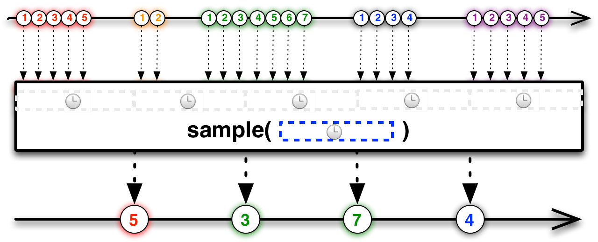

class: center, middle # Asynkronitet ## Stikkord: RxJava, Twitter --- # Agenda 1. Asynkronitet, Eventer og Reaktiv programmering 2. Intro til RxJava 3. Case med RxJava og Twitter Stream API --- class: center, middle # Asynkronitet, Eventer og Reaktiv programmering --- # Asynkronitet og eventer Diskutere i plenum - Når kan asynkronitet hjelpe oss, og hva slags type problemer kan det hjelpe oss å løse? - Hvorfor bør vi bruke det? - Hvilke utfordringer får vi ved asynkronitet? - Hva slags erfaringer har vi med dette? - Når kan event-basert programmering være fornuftig? - Forskjell på asynkronitet og event-basert? --- class: center, middle # RxJava --- # RxJava <i>RxJava – Reactive Extensions for the JVM – a library for composing asynchronous and event-based programs using observable sequences for the Java VM.</i> - RxJava er en Java-implementasjon av Reactive Extensions - Utviklet av Netflix, og brukt mye i deres systemer --- class: center, middle --- class: center, middle <img src="img/request-single.png" width="600"/> --- # Reaktiv programmering - Tenk på et Excel-ark - <code>a</code> vil automatisk oppdateres hvis <code>b</code> eller <code>c</code> endres - Deklarativ tilnærming til programmering - Sier noe om hva som skal skje, ikke hvordan ```javascript a = b + c ``` --- # RxJava - Utvider Observer-pattern med støtte for å håndtere sekvenser av data og operasjoner på disse sekvensene - Abstraherer bort ting som lavnivå trådhåndtering, synkronisering osv. <img src="img/observables_rxjava.png"/> --- # RxJava event|Iterable (pull)|Observable(push) -----|---------------|---------------- retrieve data|T next()|onNext(T) discover error|throws <code>Exception</code>|onError(Exception) complete|!hasNext()|onCompleted() ??? You can think of the Observable class as a “push” equivalent to Iterable, which is a “pull.” With an Iterable, the consumer pulls values from the producer and the thread blocks until those values arrive. By contrast, with an Observable the producer pushes values to the consumer whenever values are available. This approach is more flexible, because values can arrive synchronously or asynchronously. --- # Opprette - Opprette <code>Observable</code> med metoden <code>from</code> ```java List<Integer> list = asList(1,2,3,4,5,6,7,8,9,10); Observable.from(list); ``` --- # Subscribe på en observable ```java public final Subscription subscribe(Action1<? super T> onNext) ``` ```java Observable.from(list) .subscribe(System.out::println); ``` --- # Opprette - Opprette <code>Observable</code> med metoden <code>create</code> ```java public final static <T> Observable<T> create(OnSubscribe<T> f) ``` ```java List<Integer> list = asList(1,2,3,4,5,6,7,8,9,10); Observable.create((subscriber) -> { try { list.forEach(v -> subscriber.onNext(v)); subscriber.onCompleted(); } catch (Exception e) { subscriber.onError(e); } }); ``` --- # Subscribe på en observable ```java public final Subscription subscribe(Action1<? super T> onNext, Action1<java.lang.Throwable> onError, Action0 onComplete) ``` ```java Observable.from(list) .subscribe(System.out::println); ``` ```java Observable.from(list) .subscribe( System.out::println, e -> e.printStackTrace(), () -> System.out.println("Completed") ); ``` --- # Iterable (pull) ```java getDataFromLocalMemory() .skip(10) .take(5) .map({ s -> return s + " transformed" }) .forEach({ println "next => " + it }) ``` # Observable (push) ```java getDataFromNetwork() .skip(10) .take(5) .map({ s -> return s + " transformed" }) .subscribe({ println "onNext => " + it }) ``` ??? Mer fleksiblet på observable fordi data kan ankomme subscriber både asynkront og synkront --- # Composing functions - Observables er alene ikke så veldig spennende - Den virkelig styrken kommer med "reactive extensions" - Operasjoner som gjør at man kan transformere, kombinere og manipulere på sekvenser som en Observable emitter. - map, filter, takeWhile, count, sample, takeLast+++ ```java Observable.from(list) .filter(v -> v % 2 == 0) .map(v -> v * 2) .subscribe(System.out::println) ``` --- # Combining Observables - Mange operasjoner for å kombinere flere Observables --- # Merge <img src="http://reactivex.io/documentation/operators/images/merge.png" width="400"/> ```java List<Integer> list1 = asList(1,2,3,4,5); List<Integer> list2 = asList(6,7,8,9,10); Observable<Integer> o1 = Observable.from(list1); Observable<Integer> o2 = Observable.from(list2); Observable.merge(o1,o2); //1 2 3 4 5 6 7 8 9 10 ``` --- # Zip <img src="http://reactivex.io/documentation/operators/images/zip.o.png" width="400"/> ```java List<Integer> list1 = asList(1,2,3,4,5); List<Integer> list2 = asList(6, 7, 8, 9, 10); Observable<Integer> o1 = Observable.from(list1); Observable<Integer> o2 = Observable.from(list2); Observable.zip(o1, o2, (v1, v2) -> v1 + v2) .subscribe(v -> System.out.print(v + " ")); //7 9 11 13 15 ``` --- class: center, middle # Schedulers --- # Observable - I Netflix sitt service-lag har alle metoder følgende signatur ```java public Observable<T> getData(); ``` - Synkront på tråden som kaller metoden? - Asynkront på en separat tråd? - Deler den arbeide utover flere tråder? --- # Schedulers - RxJava er default synkront og eksekverer default på tråden som man subscriber fra - Kan konfigureres opp gjennom metodene: ```java observeOn(Scheduler s) ``` Instruerer Observable til å kalle <code>onNext</code>, <code>onError</code> og <code>onCompleted</code> på en spesifikk Scheduler. ```java subscribeOn(Scheduler s) ``` Kontroller hvilken tråd/scheduler som kallet til <code>subscribe</code> skjer på --- # Schedulers Scheduler | purpose ----------|-------- Schedulers.computation( ) | meant for computational work such as event-loops and callback processing; do not use this scheduler for I/O (use Schedulers.io( ) instead) Schedulers.from(executor) | uses the specified Executor as a Scheduler Schedulers.immediate( ) | schedules work to begin immediately in the current thread Schedulers.io( ) | meant for I/O-bound work such as asynchronous performance of blocking I/O, this scheduler is backed by a thread-pool that will grow as needed; for ordinary computational work, switch to Schedulers.computation( ) Schedulers.newThread( ) | creates a new thread for each unit of work Schedulers.trampoline( ) | queues work to begin on the current thread after any already-queued work --- # Eksempel fra Netflix ```java /** * Non-blocking method that immediately returns the value if available or * uses a thread to fetch the value and callback via `onNext()` when done. */ def Observable<T> getData(int id) { if(availableInMemory) { // if data available return immediately with data return Observable.create({ observer -> observer.onNext(valueFromMemory); observer.onCompleted(); }) } else { // else spawn thread or async IO to fetch data return Observable.create({ observer -> executor.submit({ try { // do work on separate thread T value = getValueFromRemoteService(id); // callback with value observer.onNext(value); observer.onCompleted(); } catch(Exception e) { observer.onError(e); } }) }); } } ``` --- # Backpressure - Hva hvis subscriber ikke klarer å håndtere alle data som observablen sender? - RxJava kommer med flere metoder for å håndtere backpressure --- # Sample  ```java Observable<Integer> burstySampled = bursty.sample(500, TimeUnit.MILLISECONDS); ``` --- # Window <img src="img/window.png" width="600"/> ```java Observable<Observable<Integer>> burstyWindowed = bursty.window(500, TimeUnit.MILLISECONDS); ``` --- class: center, middle # Case: Twitter stream API --- # Twitter stream API <img src="https://g.twimg.com/dev/documentation/image/streaming-intro-1_1.png"/> --- # Twitter stream API <img src="https://g.twimg.com/dev/sites/default/files/images_documentation/streaming-intro-2_1.png"/> --- # Case https://github.com/henriwi/rxjava-workshop ## Oppsett Gå til https://apps.twitter.com Trykk "Create new app". Random navn + beskrivelse og "http://example.org" som url. Gå til "Keys and Access Tokens". <code>twitter4j.properties</cod> i <code>src/main/resources</code> skal inneholde følgende: ``` oauth.consumerKey=<your-key> oauth.consumerSecret=<your-secret> oauth.accessToken=<your-token> oauth.accessTokenSecret<your-secret> ``` --- # Case - Live stream over alle tweets/med en hashtag/keyword - Top 10 hashtags siste x minutter? (buffer, window) - Visualisering av tweets på et kart - Kombinere flere twitter-streams? - Feilhåndtering? - Håndtere backpressure? - Bruke Schedulers? # Ressurser - https://github.com/henriwi/rxjava-workshop - http://henriwi.github.io/rxjava-workshop - https://github.com/ReactiveX/RxJava/wiki - http://reactivex.io/ - https://dev.twitter.com/streaming/overview - http://twitter4j.org/en/index.html